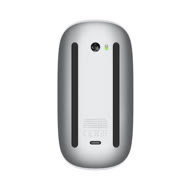
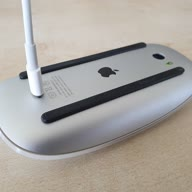
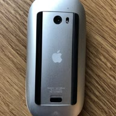

Install · shipped route · PID 0323
How to install the Magic Mouse 2024 (v3) Windows driver
Double-click Install.cmd. It registers Apple’s own unmodified signed driver as a lower filter, which restores two-finger scroll on Magic Mouse v1, v2, v2-alt and the 2024 model.
Install steps What the fix does
Do not enable Windows Test Mode for this install. Test Mode loads kernel drivers signed with a certificate Windows does not trust by default, and normally requires Secure Boot and memory integrity (HVCI) to be off. This route requires none of it: Apple’s binary is untouched and no catalog is installed, so no Test Mode is required and Secure Boot and memory integrity can stay on.
Never disable driver signature enforcement on a machine you do not control, and never install a kernel driver you have not hash-checked.
Install steps
Turn Fast Startup off first: run powercfg /h off from an elevated prompt, then reboot. It is on by default; with it on the installer aborts before it copies the driver or registers the service, so nothing is half-installed and there is nothing to undo.
-
1
Confirm your mouse
Device Manager → Human Interface Devices → Apple Magic Mouse → Properties → Details → Hardware Ids. Covers
PID_030D,PID_0269,PID_0310,PID_0323. -
2
Download and verify the driver
Get the magic-mouse-v3-windows-fix repository. Its
applewirelessmouse.sysis Apple’s own binary, byte for byte.Hash, version and signer to check
SHA256
08F33D7E3ECE2C73950A9706F1C4C9057894EAEAF1C4FB355F261F3C2333378F, 78,424 bytes, file version 6.1.7700.0, Authenticode signature Valid, signerCN=Microsoft Windows Hardware Compatibility Publisher. Check it withGet-FileHash -Algorithm SHA256 applewirelessmouse.sysandGet-AuthenticodeSignature applewirelessmouse.sys. -
3
Double-click Install.cmd
Run
v1-binary-patch\Install.cmd. It asks for Administrator itself — no PowerShell window, no execution-policy change.What it changes, and why registration is the fix
It copies Apple’s
.sysintoSystem32\drivers, creates theapplewirelessmousekernel service, addsapplewirelessmouseto the device’sLowerFilters, and restarts the Bluetooth HID device. Nothing Apple shipped is modified — the fix is registration, the approach sbagirici proved on Magic Mouse v1 and v2. Apple’s Boot Camp installer cannot do it: it refuses to run on non-Apple hardware, and even with the file present Windows will not attach the filter until something registers it. -
4
Reboot, then swipe two fingers
Scroll uses Apple’s own Mac-style translation, at fixed sensitivity.
Scroll died again after re-pairing?
The filter is registered against the device InstanceId, so unpairing and re-pairing breaks it: run
Install.cmdagain. Background: why Magic Mouse scroll stops working on Windows 11. -
5
Uninstall or roll back
Run
installer\Uninstall-MagicMousePatch.ps1as administrator.What rollback restores
It stops the
applewirelessmouseservice, restores the backed-up driver, removesapplewirelessmousefromLowerFilters, deletes the service registry key, re-enables the device, and prompts for a reboot.
Advanced: the PowerShell installer
Install.cmd wraps installer\Install-MagicMousePatch.ps1. Run that as administrator with any of these switches:
| Switch | Effect |
|---|---|
-DriverPath | Use a specific applewirelessmouse.sys instead of the bundled one. |
-FromDriverStore | Take the driver from the Windows driver store. |
-TargetPid <030D|0310|0269|0323> | Register against a specific Magic Mouse model. |
-DryRun | Report what would happen and change nothing. |
The installer identifies the binary it was handed from the Authenticode signature, and refuses one whose signature does not verify — patched but never re-signed, or a corrupted download. A legacy byte-patched and re-signed variant (SHA256 370A5555…, signed with this project’s own MagicMouseFix certificate) is no longer shipped and is documented only so an existing install can be identified. That variant does require Test Mode.
What can I install today?
There are two routes, and only one of them is ready. Install the Apple-driver route. The KMDF driver is still being written, so there is nothing to install from it.
Apple-driver route
ReadyRegisters Apple’s own signed driver as a lower filter. Package v1-binary-patch/, v1.0.0. Install this one.
KMDF route
Not readyUnfinished. v2-kmdf-driver/ holds development notes only, so there is no driver to install.
The KMDF driver is not finished: v2-kmdf-driver/ holds its README and status notes only — no compiled .sys, no signed package, no installer. Do not follow KMDF installation instructions, do not enable Test Mode for it, and never combine the two routes. The Apple-driver route above is the one you install, and it needs no Test Mode.
KMDF development status
Planned device: Apple Magic Mouse 2024 (USB-C), Bluetooth VID 05AC, PID 0x0323 only. The planned driver is self-signed, so it would require Test Mode — but there is no package to install yet. Generated scroll and automatic recovery are development goals, not shipped behaviour, and no battery path applies until that driver is finished.
Supported Magic Mouse models


